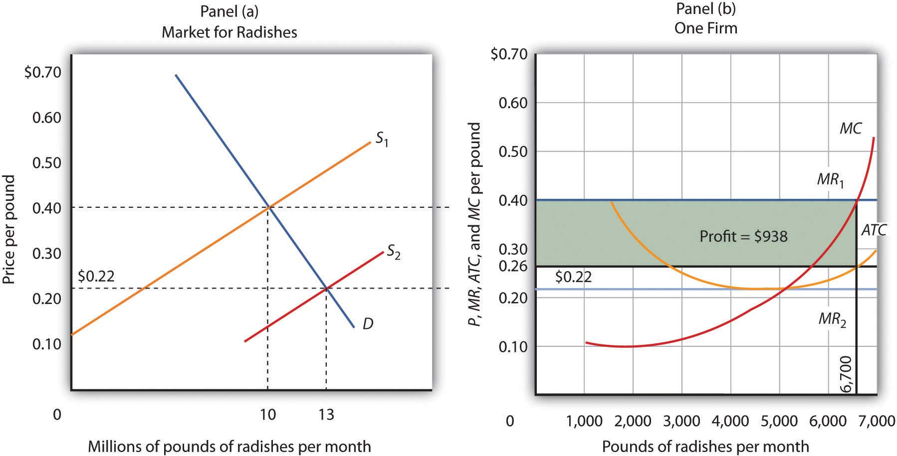
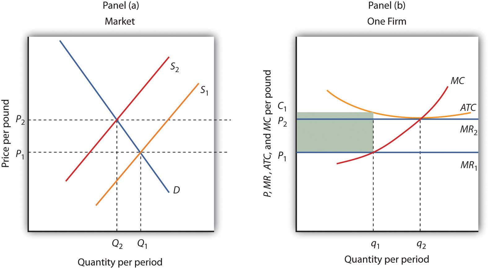
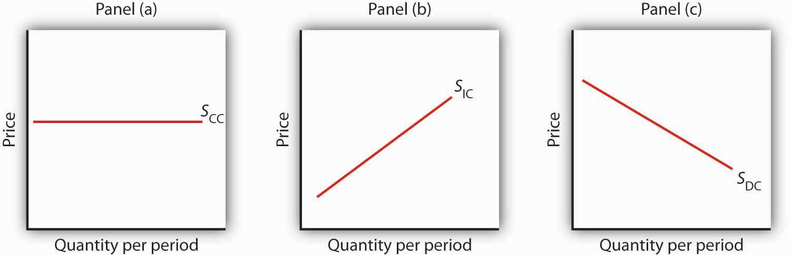
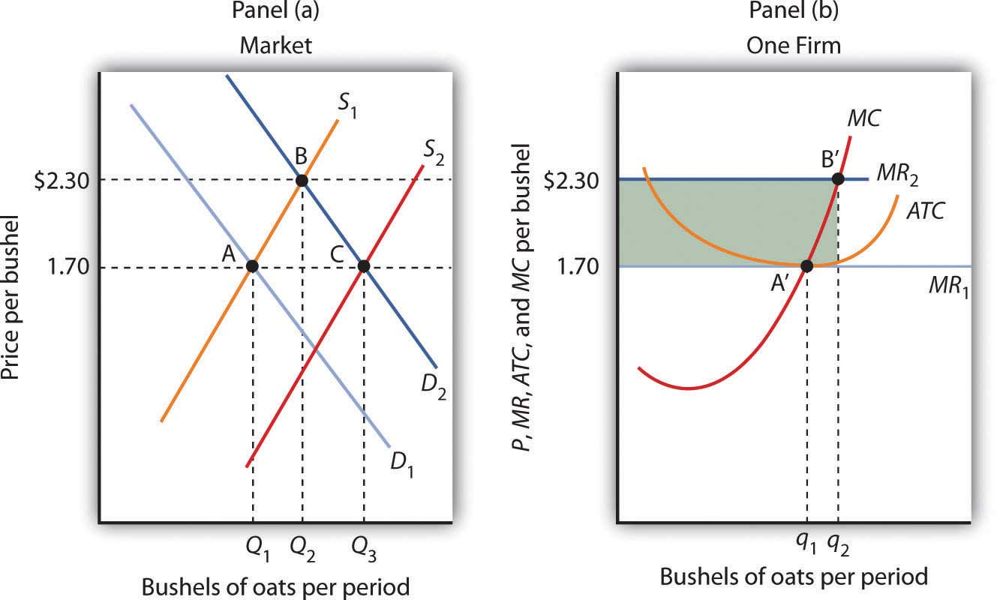
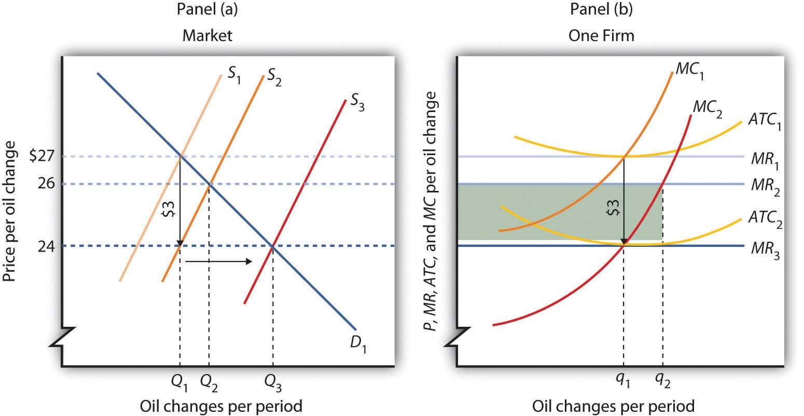

They produce a commodity that is essential to our daily lives, one for which the demand is virtually assured. And yet many—even as farm prices are reaching record highs—seem to live on the margin of failure. Thousands are driven out of business each year. We provide billions of dollars in aid for them, but still we hear of the hardships many of them face. They are our nation’s farmers.
What is it about farmers, and farming, that arouses our concern? Much of the answer probably lies in our sense that farming is fundamental to the American way of life. Our country was built, in large part, by independent men and women who made their living from the soil. Many of us perceive their plight as our plight. But part of the answer lies in the fact that farmers do, in fact, face a difficult economic environment. Most of them operate in highly competitive markets, markets that tolerate few mistakes and generally offer small rewards. Finally, perhaps our concern is stirred by our recognition that the farmers’ plight is our blessing. The low prices that make life difficult for farmers are the low prices we enjoy as consumers of food.
What keeps the returns to farming as low as they are? What holds many farmers in a situation in which they always seem to be just getting by? In this chapter we shall see that prices just high enough to induce firms to continue to produce are precisely what we would expect to prevail in a competitive market. We will examine a model of how competitive markets work. Not only does this model help to explain the situation facing farmers, but it will also help us to understand the determination of price and output in a wide range of markets. A farm is a firm, and our analysis of such a firm in a competitive market will give us the tools to analyze the choices of all firms operating in competitive markets.
We will put the concepts of marginal cost, average variable cost, and average total cost to work to see how firms in a competitive market respond to market forces. We will see how firms adjust to changes in demand and supply in the short run and in the long run. In all of this, we will be examining how firms use the marginal decision rule.
The competitive model introduced in this chapter lies at one end of a spectrum of market models. At the other end is the monopoly model. It assumes a market in which there is no competition, a market in which only a single firm operates. Two models that fall between the extremes of perfect competition and monopoly are monopolistic competition and oligopoly.
Virtually all firms in a market economy face competition from other firms. In this chapter, we will be working with a model of a highly idealized form of competition called “perfect” by economists.
Perfect competitionModel of the market based on the assumption that a large number of firms produce identical goods consumed by a large number of buyers. is a model of the market based on the assumption that a large number of firms produce identical goods consumed by a large number of buyers. The model of perfect competition also assumes that it is easy for new firms to enter the market and for existing ones to leave. And finally, it assumes that buyers and sellers have complete information about market conditions.
As we examine these assumptions in greater detail, we will see that they allow us to work with the model more easily. No market fully meets the conditions set out in these assumptions. As is always the case with models, our purpose is to understand the way things work, not to describe them. And the model of perfect competition will prove enormously useful in understanding the world of markets.
The assumptions of the model of perfect competition, taken together, imply that individual buyers and sellers in a perfectly competitive market accept the market price as given. No one buyer or seller has any influence over that price. Individuals or firms who must take the market price as given are called price takersIndividuals or firms who must take the market price as given.. A consumer or firm that takes the market price as given has no ability to influence that price. A price-taking firm or consumer is like an individual who is buying or selling stocks. He or she looks up the market price and buys or sells at that price. The price is determined by demand and supply in the market—not by individual buyers or sellers. In a perfectly competitive market, each firm and each consumer is a price taker. A price-taking consumer assumes that he or she can purchase any quantity at the market price—without affecting that price. Similarly, a price-taking firm assumes it can sell whatever quantity it wishes at the market price without affecting the price.
You are a price taker when you go into a store. You observe the prices listed and make a choice to buy or not. Your choice will not affect that price. Should you sell a textbook back to your campus bookstore at the end of a course, you are a price-taking seller. You are confronted by a market price and you decide whether to sell or not. Your decision will not affect that price.
To see how the assumptions of the model of perfect competition imply price-taking behavior, let us examine each of them in turn.
In a perfectly competitive market for a good or service, one unit of the good or service cannot be differentiated from any other on any basis. A bushel of, say, hard winter wheat is an example. A bushel produced by one farmer is identical to that produced by another. There are no brand preferences or consumer loyalties.
The assumption that goods are identical is necessary if firms are to be price takers. If one farmer’s wheat were perceived as having special properties that distinguished it from other wheat, then that farmer would have some power over its price. By assuming that all goods and services produced by firms in a perfectly competitive market are identical, we establish a necessary condition for price-taking behavior. Economists sometimes say that the goods or services in a perfectly competitive market are homogeneous, meaning that they are all alike. There are no brand differences in a perfectly competitive market.
How many buyers and sellers are in our market? The answer rests on our presumption of price-taking behavior. There are so many buyers and sellers that none of them has any influence on the market price regardless of how much any of them purchases or sells. A firm in a perfectly competitive market can react to prices, but cannot affect the prices it pays for the factors of production or the prices it receives for its output.
The assumption that it is easy for other firms to enter a perfectly competitive market implies an even greater degree of competition. Firms in a market must deal not only with the large number of competing firms but also with the possibility that still more firms might enter the market.
Later in this chapter, we will see how ease of entry is related to the sustainability of economic profits. If entry is easy, then the promise of high economic profits will quickly attract new firms. If entry is difficult, it won’t.
The model of perfect competition assumes easy exit as well as easy entry. The assumption of easy exit strengthens the assumption of easy entry. Suppose a firm is considering entering a particular market. Entry may be easy, but suppose that getting out is difficult. For example, suppliers of factors of production to firms in the industry might be happy to accommodate new firms but might require that they sign long-term contracts. Such contracts could make leaving the market difficult and costly. If that were the case, a firm might be hesitant to enter in the first place. Easy exit helps make entry easier.
We assume that all sellers have complete information about prices, technology, and all other knowledge relevant to the operation of the market. No one seller has any information about production methods that is not available to all other sellers. If one seller had an advantage over other sellers, perhaps special information about a lower-cost production method, then that seller could exert some control over market price—the seller would no longer be a price taker.
We assume also that buyers know the prices offered by every seller. If buyers did not know about prices offered by different firms in the market, then a firm might be able to sell a good or service for a price other than the market price and thus could avoid being a price taker.
The availability of information that is assumed in the model of perfect competition implies that information can be obtained at low cost. If consumers and firms can obtain information at low cost, they are likely to do so. Information about the marketplace may come over the internet, over the airways in a television commercial, or over a cup of coffee with a friend. Whatever its source, we assume that its low cost ensures that consumers and firms have enough of it so that everyone buys or sells goods and services at market prices determined by the intersection of demand and supply curves.
The assumptions of the perfectly competitive model ensure that each buyer or seller is a price taker. The market, not individual consumers or firms, determines price in the model of perfect competition. No individual has enough power in a perfectly competitive market to have any impact on that price.
The assumptions of identical products, a large number of buyers, easy entry and exit, and perfect information are strong assumptions. The notion that firms must sit back and let the market determine price seems to fly in the face of what we know about most real firms, which is that firms customarily do set prices. Yet this is the basis for the model of demand and supply, the power of which you have already seen.
When we use the model of demand and supply, we assume that market forces determine prices. In this model, buyers and sellers respond to the market price. They are price takers. The assumptions of the model of perfect competition underlie the assumption of price-taking behavior. Thus we are using the model of perfect competition whenever we apply the model of demand and supply.
We can understand most markets by applying the model of demand and supply. Even though those markets do not fulfill all the assumptions of the model of perfect competition, the model allows us to understand some key features of these markets.
Changes within your lifetime have made many markets more competitive. Falling costs of transportation, together with dramatic advances in telecommunications, have opened the possibility of entering markets to firms all over the world. A company in South Korea can compete in the market for steel in the United States. A furniture maker in New Mexico can compete in the market for furniture in Japan. A firm can enter the world market simply by creating a web page to advertise its products and to take orders.
In the remaining sections of this chapter, we will learn more about the response of firms to market prices. We will see how firms respond, in the short run and in the long run, to changes in demand and to changes in production costs. In short, we will be examining the forces that constitute the supply side of the model of demand and supply.
We will also see how competitive markets work to serve consumer interests and how competition acts to push economic profits down, sometimes eliminating them entirely. When we have finished we will have a better understanding of the market conditions facing farmers and of the conditions that prevail in any competitive industry.
Which of the following goods and services are likely produced in a perfectly competitive industry? Relate your answer to the assumptions of the model of perfect competition.
Muhammed Ibrahim Islamadin was driving a cab in Kabul, Afghanistan, when the Taliban took over the country. He foresaw the repression that would follow and sensed an opportunity.
He sold his taxicab and set up a shop for sewing and selling burkhas, the garments required of all women under the Taliban’s rule. Mr. Islamadin had an easy task selling, as women caught outdoors with exposed skin were routinely beaten by the Taliban’s religious police. He told The Wall Street Journal, “This was very bad for them, but it was good for me.”
Of course, Mr. Islamadin was not the only producer to get into the industry. Other Afghani merchants, as well as merchants from Pakistan and China, also jumped at the opportunity.
The entry of new firms exemplifies an important characteristic of perfect competition. Whenever there is an opportunity to earn economic profits—even an unexpected opportunity—new firms will enter, provided that entry is easy.
The model of perfect competition also assumes that exit will be easy if and when a firm experiences economic losses. When the Taliban rulers were ousted by the United States and its allies in 2001, Mr. Islamadin expected that the demand for burkhas would begin to fall. It did. The sales fell 50% almost immediately. Prices fell as well, generally by about 20%.
It was simple for Mr. Islamadin to leave the industry. He gave his remaining stock of burkhas to a brother who was producing them in the countryside where women continued to wear them. As for Mr. Islamadin, he has made plans to go into the glassware business. He expects the demand for glass teacups to be strong whatever happens in Afghanistan’s critical future.
Source: Andrew Higgins, “With Islamic Dress, Out Goes the Guy Who Sold Burkhas,” The Wall Street Journal, December 19, 2001, p. A1.
Our goal in this section is to see how a firm in a perfectly competitive market determines its output level in the short run—a planning period in which at least one factor of production is fixed in quantity. We shall see that the firm can maximize economic profit by applying the marginal decision rule and increasing output up to the point at which the marginal benefit of an additional unit of output is just equal to the marginal cost. This fact has an important implication: over a wide range of output, the firm’s marginal cost curve is its supply curve.
Each firm in a perfectly competitive market is a price taker; the equilibrium price and industry output are determined by demand and supply. Figure 9.1 "The Market for Radishes" shows how demand and supply in the market for radishes, which we shall assume are produced under conditions of perfect competition, determine total output and price. The equilibrium price is $0.40 per pound; the equilibrium quantity is 10 million pounds per month.
Figure 9.1 The Market for Radishes

Price and output in a competitive market are determined by demand and supply. In the market for radishes, the equilibrium price is $0.40 per pound; 10 million pounds per month are produced and purchased at this price.
Because it is a price taker, each firm in the radish industry assumes it can sell all the radishes it wants at a price of $0.40 per pound. No matter how many or how few radishes it produces, the firm expects to sell them all at the market price.
The assumption that the firm expects to sell all the radishes it wants at the market price is crucial. If a firm did not expect to sell all of its radishes at the market price—if it had to lower the price to sell some quantities—the firm would not be a price taker. And price-taking behavior is central to the model of perfect competition.
Radish growers—and perfectly competitive firms in general—have no reason to charge a price lower than the market price. Because buyers have complete information and because we assume each firm’s product is identical to that of its rivals, firms are unable to charge a price higher than the market price. For perfectly competitive firms, the price is very much like the weather: they may complain about it, but in perfect competition there is nothing any of them can do about it.
While a firm in a perfectly competitive market has no influence over its price, it does determine the output it will produce. In selecting the quantity of that output, one important consideration is the revenue the firm will gain by producing it.
A firm’s total revenueA firm’s output multiplied by the price at which it sells that output. is found by multiplying its output by the price at which it sells that output. For a perfectly competitive firm, total revenue (TR) is the market price (P) times the quantity the firm produces (Q), or
Equation 9.1
The relationship between market price and the firm’s total revenue curve is a crucial one. Panel (a) of Figure 9.2 "Total Revenue, Marginal Revenue, and Average Revenue" shows total revenue curves for a radish grower at three possible market prices: $0.20, $0.40, and $0.60 per pound. Each total revenue curve is a linear, upward-sloping curve. At any price, the greater the quantity a perfectly competitive firm sells, the greater its total revenue. Notice that the greater the price, the steeper the total revenue curve is.
Figure 9.2 Total Revenue, Marginal Revenue, and Average Revenue

Panel (a) shows different total revenue curves for three possible market prices in perfect competition. A total revenue curve is a straight line coming out of the origin. The slope of a total revenue curve is MR; it equals the market price (P) and AR in perfect competition. Marginal revenue and average revenue are thus a single horizontal line at the market price, as shown in Panel (b). There is a different marginal revenue curve for each price.
The slope of a total revenue curve is particularly important. It equals the change in the vertical axis (total revenue) divided by the change in the horizontal axis (quantity) between any two points. The slope measures the rate at which total revenue increases as output increases. We can think of it as the increase in total revenue associated with a 1-unit increase in output. The increase in total revenue from a 1-unit increase in quantity is marginal revenueThe increase in total revenue from a one-unit increase in quantity.. Thus marginal revenue (MR) equals the slope of the total revenue curve.
How much additional revenue does a radish producer gain from selling one more pound of radishes? The answer, of course, is the market price for 1 pound. Marginal revenue equals the market price. Because the market price is not affected by the output choice of a single firm, the marginal revenue the firm gains by producing one more unit is always the market price. The marginal revenue curve shows the relationship between marginal revenue and the quantity a firm produces. For a perfectly competitive firm, the marginal revenue curve is a horizontal line at the market price. If the market price of a pound of radishes is $0.40, then the marginal revenue is $0.40. Marginal revenue curves for prices of $0.20, $0.40, and $0.60 are given in Panel (b) of Figure 9.2 "Total Revenue, Marginal Revenue, and Average Revenue". In perfect competition, a firm’s marginal revenue curve is a horizontal line at the market price.
Price also equals average revenueTotal revenue divided by quantity., which is total revenue divided by quantity. Equation 9.1 gives total revenue, TR. To obtain average revenue (AR), we divide total revenue by quantity, Q. Because total revenue equals price (P) times quantity (Q), dividing by quantity leaves us with price.
Equation 9.2
The marginal revenue curve is a horizontal line at the market price, and average revenue equals the market price. The average and marginal revenue curves are given by the same horizontal line. This is consistent with what we have learned about the relationship between marginal and average values. When the marginal value exceeds the average value, the average value will be rising. When the marginal value is less than the average value, the average value will be falling. What happens when the average and marginal values do not change, as in the horizontal curves of Panel (b) of Figure 9.2 "Total Revenue, Marginal Revenue, and Average Revenue"? The marginal value must equal the average value; the two curves coincide.
We have seen that a perfectly competitive firm’s marginal revenue curve is simply a horizontal line at the market price and that this same line is also the firm’s average revenue curve. For the perfectly competitive firm, . The marginal revenue curve has another meaning as well. It is the demand curve facing a perfectly competitive firm.
Consider the case of a single radish producer, Tony Gortari. We assume that the radish market is perfectly competitive; Mr. Gortari runs a perfectly competitive firm. Suppose the market price of radishes is $0.40 per pound. How many pounds of radishes can Mr. Gortari sell at this price? The answer comes from our assumption that he is a price taker: He can sell any quantity he wishes at this price. How many pounds of radishes will he sell if he charges a price that exceeds the market price? None. His radishes are identical to those of every other firm in the market, and everyone in the market has complete information. That means the demand curve facing Mr. Gortari is a horizontal line at the market price as illustrated in Figure 9.3 "Price, Marginal Revenue, and Demand". Notice that the curve is labeled d to distinguish it from the market demand curve, D, in Figure 9.1 "The Market for Radishes". The horizontal line in Figure 9.3 "Price, Marginal Revenue, and Demand" is also Mr. Gortari’s marginal revenue curve, MR, and his average revenue curve, AR. It is also the market price, P.
Of course, Mr. Gortari could charge a price below the market price, but why would he? We assume he can sell all the radishes he wants at the market price; there would be no reason to charge a lower price. Mr. Gortari faces a demand curve that is a horizontal line at the market price. In our subsequent analysis, we shall refer to the horizontal line at the market price simply as marginal revenue. We should remember, however, that this same line gives us the market price, average revenue, and the demand curve facing the firm.
Figure 9.3 Price, Marginal Revenue, and Demand

A perfectly competitive firm faces a horizontal demand curve at the market price. Here, radish grower Tony Gortari faces demand curve d at the market price of $0.40 per pound. He could sell q1 or q2—or any other quantity—at a price of $0.40 per pound.
More generally, we can say that any perfectly competitive firm faces a horizontal demand curve at the market price. We saw an example of a horizontal demand curve in the chapter on elasticity. Such a curve is perfectly elastic, meaning that any quantity is demanded at a given price.
A firm’s economic profit is the difference between total revenue and total cost. Recall that total cost is the opportunity cost of producing a certain good or service. When we speak of economic profit we are speaking of a firm’s total revenue less the total opportunity cost of its operations.
As we learned, a firm’s total cost curve in the short run intersects the vertical axis at some positive value equal to the firm’s total fixed costs. Total cost then rises at a decreasing rate over the range of increasing marginal returns to the firm’s variable factors. It rises at an increasing rate over the range of diminishing marginal returns. Figure 9.4 "Total Revenue, Total Cost, and Economic Profit" shows the total cost curve for Mr. Gortari, as well as the total revenue curve for a price of $0.40 per pound. Suppose that his total fixed cost is $400 per month. For any given level of output, Mr. Gortari’s economic profit is the vertical distance between the total revenue curve and the total cost curve at that level.
Figure 9.4 Total Revenue, Total Cost, and Economic Profit

Economic profit is the vertical distance between the total revenue and total cost curves (revenue minus costs). Here, the maximum profit attainable by Tony Gortari for his radish production is $938 per month at an output of 6,700 pounds.
Let us examine the total revenue and total cost curves in Figure 9.4 "Total Revenue, Total Cost, and Economic Profit" more carefully. At zero units of output, Mr. Gortari’s total cost is $400 (his total fixed cost); total revenue is zero. Total cost continues to exceed total revenue up to an output of 1,500 pounds per month, at which point the two curves intersect. At this point, economic profit equals zero. As Mr. Gortari expands output above 1,500 pounds per month, total revenue becomes greater than total cost. We see that at a quantity of 1,500 pounds per month, the total revenue curve is steeper than the total cost curve. Because revenues are rising faster than costs, profits rise with increased output. As long as the total revenue curve is steeper than the total cost curve, profit increases as the firm increases its output.
The total revenue curve’s slope does not change as the firm increases its output. But the total cost curve becomes steeper and steeper as diminishing marginal returns set in. Eventually, the total cost and total revenue curves will have the same slope. That happens in Figure 9.4 "Total Revenue, Total Cost, and Economic Profit" at an output of 6,700 pounds of radishes per month. Notice that a line drawn tangent to the total cost curve at that quantity has the same slope as the total revenue curve.
As output increases beyond 6,700 pounds, the total cost curve continues to become steeper. It becomes steeper than the total revenue curve, and profits fall as costs rise faster than revenues. At an output slightly above 8,000 pounds per month, the total revenue and cost curves intersect again, and economic profit equals zero. Mr. Gortari achieves the greatest profit possible by producing 6,700 pounds of radishes per month, the quantity at which the total cost and total revenue curves have the same slope. More generally, we can conclude that a perfectly competitive firm maximizes economic profit at the output level at which the total revenue curve and the total cost curve have the same slope.
The slope of the total revenue curve is marginal revenue; the slope of the total cost curve is marginal cost. Economic profit, the difference between total revenue and total cost, is maximized where marginal revenue equals marginal cost. This is consistent with the marginal decision rule, which holds that a profit-maximizing firm should increase output until the marginal benefit of an additional unit equals the marginal cost. The marginal benefit of selling an additional unit is measured as marginal revenue. Finding the output at which marginal revenue equals marginal cost is thus an application of our marginal decision rule.
Figure 9.5 "Applying the Marginal Decision Rule" shows how a firm can use the marginal decision rule to determine its profit-maximizing output. Panel (a) shows the market for radishes; the market demand curve (D), and supply curve (S) that we had in Figure 9.1 "The Market for Radishes"; the market price is $0.40 per pound. In Panel (b), the MR curve is given by a horizontal line at the market price. The firm’s marginal cost curve (MC) intersects the marginal revenue curve at the point where profit is maximized. Mr. Gortari maximizes profits by producing 6,700 pounds of radishes per month. That is, of course, the result we obtained in Figure 9.4 "Total Revenue, Total Cost, and Economic Profit", where we saw that the firm’s total revenue and total cost curves differ by the greatest amount at the point at which the slopes of the curves, which equal marginal revenue and marginal cost, respectively, are equal.
Figure 9.5 Applying the Marginal Decision Rule

The market price is determined by the intersection of demand and supply. As always, the firm maximizes profit by applying the marginal decision rule. It takes the market price, $0.40 per pound, as given and selects an output at which MR equals MC. Economic profit per unit is the difference between ATC and price (here, $0.14 per pound); economic profit is profit per unit times the quantity produced ($0.14 × 6,700 = $938).
We can use the graph in Figure 9.5 "Applying the Marginal Decision Rule" to compute Mr. Gortari’s economic profit. Economic profit per unitThe difference between price and average total cost. is the difference between price and average total cost. At the profit-maximizing output of 6,700 pounds of radishes per month, average total cost (ATC) is $0.26 per pound, as shown in Panel (b). Price is $0.40 per pound, so economic profit per unit is $0.14. Economic profit is found by multiplying economic profit per unit by the number of units produced; the firm’s economic profit is thus $938 ($0.14 × 6,700). It is shown graphically by the area of the shaded rectangle in Panel (b); this area equals the vertical distance between marginal revenue (MR) and average total cost (ATC) at an output of 6,700 pounds of radishes times the number of pounds of radishes produced, 6,700, in Figure 9.5 "Applying the Marginal Decision Rule".
Look carefully at the rectangle that shows economic profit in Panel (b) of Figure 9.5 "Applying the Marginal Decision Rule". It is found by taking the profit-maximizing quantity, 6,700 pounds, then reading up to the ATC curve and the firm’s demand curve at the market price. Economic profit per unit equals price minus average total cost (P − ATC).
The firm’s economic profit equals economic profit per unit times the quantity produced. It is found by extending horizontal lines from the ATC and MR curve to the vertical axis and taking the area of the rectangle formed.
There is no reason for the profit-maximizing quantity to correspond to the lowest point on the ATC curve; it does not in this case. Students sometimes make the mistake of calculating economic profit as the difference between the price and the lowest point on the ATC curve. That gives us the maximum economic profit per unit, but we assume that firms maximize economic profit, not economic profit per unit. The firm’s economic profit equals economic profit per unit times quantity. The quantity that maximizes economic profit is determined by the intersection of ATC and MR.
In the short run, a firm has one or more inputs whose quantities are fixed. That means that in the short run the firm cannot leave its industry. Even if it cannot cover all of its costs, including both its variable and fixed costs, going entirely out of business is not an option in the short run. The firm may close its doors, but it must continue to pay its fixed costs. It is forced to accept an economic lossThe amount by which a firm’s total cost exceeds its total revenue., the amount by which its total cost exceeds its total revenue.
Suppose, for example, that a manufacturer has signed a 1-year lease on some equipment. It must make payments for this equipment during the term of its lease, whether it produces anything or not. During the period of the lease, the payments represent a fixed cost for the firm.
A firm that is experiencing economic losses—whose economic profits have become negative—in the short run may either continue to produce or shut down its operations, reducing its output to zero. It will choose the option that minimizes its losses. The crucial test of whether to operate or shut down lies in the relationship between price and average variable cost.
Suppose the demand for radishes falls to D2, as shown in Panel (a) of Figure 9.6 "Suffering Economic Losses in the Short Run". The market price for radishes plunges to $0.18 per pound, which is below average total cost. Consequently Mr. Gortari experiences negative economic profits—a loss. Although the new market price falls short of average total cost, it still exceeds average variable cost, shown in Panel (b) as AVC. Therefore, Mr. Gortari should continue to produce an output at which marginal cost equals marginal revenue. These curves (labeled MC and MR2) intersect in Panel (b) at an output of 4,444 pounds of radishes per month.
Figure 9.6 Suffering Economic Losses in the Short Run

Tony Gortari experiences a loss when price drops below ATC, as it does in Panel (b) as a result of a reduction in demand. If price is above AVC, however, he can minimize his losses by producing where MC equals MR2. Here, that occurs at an output of 4,444 pounds of radishes per month. The price is $0.18 per pound, and average total cost is $0.23 per pound. He loses $0.05 per pound, or $222.20 per month.
When producing 4,444 pounds of radishes per month, Mr. Gortari faces an average total cost of $0.23 per pound. At a price of $0.18 per pound, he loses a nickel on each pound produced. Total economic losses at an output of 4,444 pounds per month are thus $222.20 per month (=4,444×$0.05).
No producer likes a loss (that is, negative economic profit), but the loss solution shown in Figure 9.6 "Suffering Economic Losses in the Short Run" is the best Mr. Gortari can attain. Any level of production other than the one at which marginal cost equals marginal revenue would produce even greater losses.
Suppose Mr. Gortari were to shut down and produce no radishes. Ceasing production would reduce variable costs to zero, but he would still face fixed costs of $400 per month (recall that $400 was the vertical intercept of the total cost curve in Figure 9.4 "Total Revenue, Total Cost, and Economic Profit"). By shutting down, Mr. Gortari would lose $400 per month. By continuing to produce, he loses only $222.20.
Mr. Gortari is better off producing where marginal cost equals marginal revenue because at that output price exceeds average variable cost. Average variable cost is $0.14 per pound, so by continuing to produce he covers his variable costs, with $0.04 per pound left over to apply to fixed costs. Whenever price is greater than average variable cost, the firm maximizes economic profit (or minimizes economic loss) by producing the output level at which marginal revenue and marginal cost curves intersect.
Suppose price drops below a firm’s average variable cost. Now the best strategy for the firm is to shut down, reducing its output to zero. The minimum level of average variable cost, which occurs at the intersection of the marginal cost curve and the average variable cost curve, is called the shutdown pointThe minimum level of average variable cost, which occurs at the intersection of the marginal cost curve and the average variable cost curve.. Any price below the minimum value of average variable cost will cause the firm to shut down. If the firm were to continue producing, not only would it lose its fixed costs, but it would also face an additional loss by not covering its variable costs.
Figure 9.7 "Shutting Down" shows a case where the price of radishes drops to $0.10 per pound. Price is less than average variable cost, so Mr. Gortari not only would lose his fixed cost but would also incur additional losses by producing. Suppose, for example, he decided to operate where marginal cost equals marginal revenue, producing 1,700 pounds of radishes per month. Average variable cost equals $0.14 per pound, so he would lose $0.04 on each pound he produces ($68) plus his fixed cost of $400 per month. He would lose $468 per month. If he shut down, he would lose only his fixed cost. Because the price of $0.10 falls below his average variable cost, his best course would be to shut down.
Figure 9.7 Shutting Down

The market price of radishes drops to $0.10 per pound, so MR3 is below Mr. Gortari’s AVC. Thus he would suffer a greater loss by continuing to operate than by shutting down. Whenever price falls below average variable cost, the firm will shut down, reducing its production to zero.
Shutting down is not the same thing as going out of business. A firm shuts down by closing its doors; it can reopen them whenever it expects to cover its variable costs. We can even think of a firm’s decision to close at the end of the day as a kind of shutdown point; the firm makes this choice because it does not anticipate that it will be able to cover its variable cost overnight. It expects to cover those costs the next morning when it reopens its doors.
In the model of perfect competition, we assume that a firm determines its output by finding the point where the marginal revenue and marginal cost curves intersect. Provided that price exceeds average variable cost, the firm produces the quantity determined by the intersection of the two curves.
A supply curve tells us the quantity that will be produced at each price, and that is what the firm’s marginal cost curve tells us. The firm’s supply curve in the short run is its marginal cost curve for prices above the average variable cost. At prices below average variable cost, the firm’s output drops to zero.
Panel (a) of Figure 9.8 "Marginal Cost and Supply" shows the average variable cost and marginal cost curves for a hypothetical astrologer, Madame LaFarge, who is in the business of providing astrological consultations over the telephone. We shall assume that this industry is perfectly competitive. At any price below $10 per call, Madame LaFarge would shut down. If the price is $10 or greater, however, she produces an output at which price equals marginal cost. The marginal cost curve is thus her supply curve at all prices greater than $10.
Figure 9.8 Marginal Cost and Supply

The supply curve for a firm is that portion of its MC curve that lies above the AVC curve, shown in Panel (a). To obtain the short-run supply curve for the industry, we add the outputs of each firm at each price. The industry supply curve is given in Panel (b).
Now suppose that the astrological forecast industry consists of Madame LaFarge and thousands of other firms similar to hers. The market supply curve is found by adding the outputs of each firm at each price, as shown in Panel (b) of Figure 9.8 "Marginal Cost and Supply". At a price of $10 per call, for example, Madame LaFarge supplies 14 calls per day. Adding the quantities supplied by all the other firms in the market, suppose we get a quantity supplied of 280,000. Notice that the market supply curve we have drawn is linear; throughout the book we have made the assumption that market demand and supply curves are linear in order to simplify our analysis.
Looking at Figure 9.8 "Marginal Cost and Supply", we see that profit-maximizing choices by firms in a perfectly competitive market will generate a market supply curve that reflects marginal cost. Provided there are no external benefits or costs in producing a good or service, a perfectly competitive market satisfies the efficiency condition.
Assume that Acme Clothing, the firm introduced in the chapter on production and cost, produces jackets in a perfectly competitive market. Suppose the demand and supply curves for jackets intersect at a price of $81. Now, using the marginal cost and average total cost curves for Acme shown here:

Estimate Acme’s profit-maximizing output per day (assume the firm selects a whole number). What are Acme’s economic profits per day?
The 66 satellites were poised to start falling from the sky. The hope was that the pieces would burn to bits on their way down through the atmosphere, but there was the chance that a building or a person would take a direct hit.
The satellites were the primary communication devices of Iridium’s satellite phone system. Begun in 1998 as the first truly global satellite system for mobile phones—providing communications across deserts, in the middle of oceans, and at the poles—Iridium expected five million subscribers to pay $7 a minute to talk on $3,000 handsets. In the climate of the late 1990s, users opted for cheaper, though less secure and less comprehensive, cell phones. By the end of the decade, Iridium had declared bankruptcy, shut down operations, and was just waiting for the satellites to start plunging from their orbits around 2007.
The only offer for Iridium’s $5 billion system came from an ex-CEO of a nuclear reactor business, Dan Colussy, and it was for a measly $25 million. “It’s like picking up a $150,000 Porsche 911 for $750,” wrote USA Today reporter, Kevin Maney.
The purchase turned into a bonanza. In the wake of September 11, 2001, and then the wars in Afghanistan and Iraq, demand for secure communications in remote locations skyrocketed. New customers included the U.S. and British militaries, as well as reporters in Iraq, who, when traveling with the military have been barred from using less secure systems that are easier to track. The nonprofit organization Operation Call Home has bought time to allow members of the 81st Armor Brigade of the Washington National Guard to communicate with their families at home. Airlines and shipping lines have also signed up.
As the new Iridium became unburdened from the debt of the old one and technology improved, the lower fixed and variable costs have contributed to Iridium’s revival, but clearly a critical element in the turnaround has been increased demand. The launching of an additional seven spare satellites and other tinkering have extended the life of the system to at least 2014. The firm was temporarily shut down but, with its new owners and new demand for its services, has come roaring back.
Why did Colussy buy Iridium? A top executive in the new firm said that Colussy just found the elimination of the satellites a terrible waste. Perhaps he had some niche uses in mind, as even before September 11, 2001, he had begun to enroll some new customers, such as the Colombian national police, who no doubt found the system useful in the fighting drug lords. But it was in the aftermath of 9/11 that its subscriber list really began to grow and its re-opening was deemed a stroke of genius. Today Iridium’s customers include ships at sea (which account for about half of its business), airlines, military uses, and a variety of commercial and humanitarian applications.
Sources: Kevin Maney, “Remember Those ‘Iridium’s Going to Fail’ Jokes? Prepare to Eat Your Hat,” USA Today, April 9, 2003: p. 3B. Michael Mecham, “Handheld Comeback: A Resurrected Iridium Counts Aviation, Antiterrorism Among Its Growth Fields,” Aviation Week and Space Technology, 161: 9 (September 6, 2004): p. 58. Iridium’s webpage can be found at Iridium.com.
At a price of $81, Acme’s marginal revenue curve is a horizontal line at $81. The firm produces the output at which marginal cost equals marginal revenue; the curves intersect at a quantity of 9 jackets per day. Acme’s average total cost at this level of output equals $67, for an economic profit per jacket of $14. Acme’s economic profit per day equals about $126.

In the long run, a firm is free to adjust all of its inputs. New firms can enter any market; existing firms can leave their markets. We shall see in this section that the model of perfect competition predicts that, at a long-run equilibrium, production takes place at the lowest possible cost per unit and that all economic profits and losses are eliminated.
Economic profits and losses play a crucial role in the model of perfect competition. The existence of economic profits in a particular industry attracts new firms to the industry in the long run. As new firms enter, the supply curve shifts to the right, price falls, and profits fall. Firms continue to enter the industry until economic profits fall to zero. If firms in an industry are experiencing economic losses, some will leave. The supply curve shifts to the left, increasing price and reducing losses. Firms continue to leave until the remaining firms are no longer suffering losses—until economic profits are zero.
Before examining the mechanism through which entry and exit eliminate economic profits and losses, we shall examine an important key to understanding it: the difference between the accounting and economic concepts of profit and loss.
Economic profit equals total revenue minus total cost, where cost is measured in the economic sense as opportunity cost. An economic loss (negative economic profit) is incurred if total cost exceeds total revenue.
Accountants include only explicit costs in their computation of total cost. Explicit costsCharges that must be paid for factors of production such as labor and capital. include charges that must be paid for factors of production such as labor and capital, together with an estimate of depreciation. Profit computed using only explicit costs is called accounting profitProfit computed using only explicit costs.. It is the measure of profit firms typically report; firms pay taxes on their accounting profits, and a corporation reporting its profit for a particular period reports its accounting profits. To compute his accounting profits, Mr. Gortari, the radish farmer, would subtract explicit costs, such as charges for labor, equipment, and other supplies, from the revenue he receives.
Economists recognize costs in addition to the explicit costs listed by accountants. If Mr. Gortari were not growing radishes, he could be doing something else with the land and with his own efforts. Suppose the most valuable alternative use of his land would be to produce carrots, from which Mr. Gortari could earn $250 per month in accounting profits. The income he forgoes by not producing carrots is an opportunity cost of producing radishes. This cost is not explicit; the return Mr. Gortari could get from producing carrots will not appear on a conventional accounting statement of his accounting profit. A cost that is included in the economic concept of opportunity cost, but that is not an explicit cost, is called an implicit costA cost that is included in the economic concept of opportunity cost but that is not an explicit cost..
Given our definition of economic profits, we can easily see why, in perfect competition, they must always equal zero in the long run. Suppose there are two industries in the economy, and that firms in Industry A are earning economic profits. By definition, firms in Industry A are earning a return greater than the return available in Industry B. That means that firms in Industry B are earning less than they could in Industry A. Firms in Industry B are experiencing economic losses.
Given easy entry and exit, some firms in Industry B will leave it and enter Industry A to earn the greater profits available there. As they do so, the supply curve in Industry B will shift to the left, increasing prices and profits there. As former Industry B firms enter Industry A, the supply curve in Industry A will shift to the right, lowering profits in A. The process of firms leaving Industry B and entering A will continue until firms in both industries are earning zero economic profit. That suggests an important long-run result: Economic profits in a system of perfectly competitive markets will, in the long run, be driven to zero in all industries.
The process through which entry will eliminate economic profits in the long run is illustrated in Figure 9.9 "Eliminating Economic Profits in the Long Run", which is based on the situation presented in Figure 9.5 "Applying the Marginal Decision Rule". The price of radishes is $0.40 per pound. Mr. Gortari’s average total cost at an output of 6,700 pounds of radishes per month is $0.26 per pound. Profit per unit is $0.14 ($0.40 − $0.26). Mr. Gortari thus earns a profit of $938 per month (=$0.14 × 6,700).
Figure 9.9 Eliminating Economic Profits in the Long Run
If firms in an industry are making an economic profit, entry will occur in the long run. In Panel (b), a single firm’s profit is shown by the shaded area. Entry continues until firms in the industry are operating at the lowest point on their respective average total cost curves, and economic profits fall to zero.
Profits in the radish industry attract entry in the long run. Panel (a) of Figure 9.9 "Eliminating Economic Profits in the Long Run" shows that as firms enter, the supply curve shifts to the right and the price of radishes falls. New firms enter as long as there are economic profits to be made—as long as price exceeds ATC in Panel (b). As price falls, marginal revenue falls to MR2 and the firm reduces the quantity it supplies, moving along the marginal cost (MC) curve to the lowest point on the ATC curve, at $0.22 per pound and an output of 5,000 pounds per month. Although the output of individual firms falls in response to falling prices, there are now more firms, so industry output rises to 13 million pounds per month in Panel (a).
Just as entry eliminates economic profits in the long run, exit eliminates economic losses. In Figure 9.10 "Eliminating Economic Losses in the Long Run", Panel (a) shows the case of an industry in which the market price P1 is below ATC. In Panel (b), at price P1 a single firm produces a quantity q1, assuming it is at least covering its average variable cost. The firm’s losses are shown by the shaded rectangle bounded by its average total cost C1 and price P1 and by output q1.
Because firms in the industry are losing money, some will exit. The supply curve in Panel (a) shifts to the left, and it continues shifting as long as firms are suffering losses. Eventually the supply curve shifts all the way to S2, price rises to P2, and economic profits return to zero.
Figure 9.10 Eliminating Economic Losses in the Long Run
Panel (b) shows that at the initial price P1, firms in the industry cannot cover average total cost (MR1 is below ATC). That induces some firms to leave the industry, shifting the supply curve in Panel (a) to S2, reducing industry output to Q2 and raising price to P2. At that price (MR2), firms earn zero economic profit, and exit from the industry ceases. Panel (b) shows that the firm increases output from q1 to q2; total output in the market falls in Panel (a) because there are fewer firms. Notice that in Panel (a) quantity is designated by uppercase Q, while in Panel (b) quantity is designated by lowercase q. This convention is used throughout the text to distinguish between the quantity supplied in the market (Q) and the quantity supplied by a typical firm (q).
In our examination of entry and exit in response to economic profit or loss in a perfectly competitive industry, we assumed that the ATC curve of a single firm does not shift as new firms enter or existing firms leave the industry. That is the case when expansion or contraction does not affect prices for the factors of production used by firms in the industry. When expansion of the industry does not affect the prices of factors of production, it is a constant-cost industryIndustry in which expansion does not affect the prices of factors of production.. In some cases, however, the entry of new firms may affect input prices.
As new firms enter, they add to the demand for the factors of production used by the industry. If the industry is a significant user of those factors, the increase in demand could push up the market price of factors of production for all firms in the industry. If that occurs, then entry into an industry will boost average costs at the same time as it puts downward pressure on price. Long-run equilibrium will still occur at a zero level of economic profit and with firms operating on the lowest point on the ATC curve, but that cost curve will be somewhat higher than before entry occurred. Suppose, for example, that an increase in demand for new houses drives prices higher and induces entry. That will increase the demand for workers in the construction industry and is likely to result in higher wages in the industry, driving up costs.
An industry in which the entry of new firms bids up the prices of factors of production and thus increases production costs is called an increasing-cost industryIndustry in which the entry of new firms bids up the prices of factors of production and thus increases production costs.. As such an industry expands in the long run, its price will rise.
Some industries may experience reductions in input prices as they expand with the entry of new firms. That may occur because firms supplying the industry experience economies of scale as they increase production, thus driving input prices down. Expansion may also induce technological changes that lower input costs. That is clearly the case of the computer industry, which has enjoyed falling input costs as it has expanded. An industry in which production costs fall as firms enter in the long run is a decreasing-cost industryIndustry in which production costs fall in the long run as firms enter..
Just as industries may expand with the entry of new firms, they may contract with the exit of existing firms. In a constant-cost industry, exit will not affect the input prices of remaining firms. In an increasing-cost industry, exit will reduce the input prices of remaining firms. And, in a decreasing-cost industry, input prices may rise with the exit of existing firms.
The behavior of production costs as firms in an industry expand or reduce their output has important implications for the long-run industry supply curveA curve that relates the price of a good or service to the quantity produced after all long-run adjustments to a price change have been completed., a curve that relates the price of a good or service to the quantity produced after all long-run adjustments to a price change have been completed. Every point on a long-run supply curve therefore shows a price and quantity supplied at which firms in the industry are earning zero economic profit. Unlike the short-run market supply curve, the long-run industry supply curve does not hold factor costs and the number of firms unchanged.
Figure 9.11 "Long-Run Supply Curves in Perfect Competition" shows three long-run industry supply curves. In Panel (a), SCC is a long-run supply curve for a constant-cost industry. It is horizontal. Neither expansion nor contraction by itself affects market price. In Panel (b), SIC is a long-run supply curve for an increasing-cost industry. It rises as the industry expands. In Panel (c), SDC is a long-run supply curve for a decreasing-cost industry. Its downward slope suggests a falling price as the industry expands.
Figure 9.11 Long-Run Supply Curves in Perfect Competition
The long-run supply curve for a constant-cost, perfectly competitive industry is a horizontal line, SCC, shown in Panel (a). The long-run curve for an increasing-cost industry is an upward-sloping curve, SIC, as in Panel (b). The downward-sloping long-run supply curve, SDC, for a decreasing cost industry is given in Panel (c).
The primary application of the model of perfect competition is in predicting how firms will respond to changes in demand and in production costs. To see how firms respond to a particular change, we determine how the change affects demand or cost conditions and then see how the profit-maximizing solution is affected in the short run and in the long run. Having determined how the profit-maximizing firms of the model would respond, we can then predict firms’ responses to similar changes in the real world.
In the examples that follow, we shall assume, for simplicity, that entry or exit do not affect the input prices facing firms in the industry. That is, we assume a constant-cost industry with a horizontal long-run industry supply curve similar to SCC in Figure 9.11 "Long-Run Supply Curves in Perfect Competition". We shall assume that firms are covering their average variable costs, so we can ignore the possibility of shutting down.
Changes in demand can occur for a variety of reasons. There may be a change in preferences, incomes, the price of a related good, population, or consumer expectations. A change in demand causes a change in the market price, thus shifting the marginal revenue curves of firms in the industry.
Let us consider the impact of a change in demand for oats. Suppose new evidence suggests that eating oats not only helps to prevent heart disease, but also prevents baldness in males. This will, of course, increase the demand for oats. To assess the impact of this change, we assume that the industry is perfectly competitive and that it is initially in long-run equilibrium at a price of $1.70 per bushel. Economic profits equal zero.
The initial situation is depicted in Figure 9.12 "Short-Run and Long-Run Adjustments to an Increase in Demand". Panel (a) shows that at a price of $1.70, industry output is Q1 (point A), while Panel (b) shows that the market price constitutes the marginal revenue, MR1, facing a single firm in the industry. The firm responds to that price by finding the output level at which the MC and MR1 curves intersect. That implies a level of output q1 at point A′.
The new medical evidence causes demand to increase to D2 in Panel (a). That increases the market price to $2.30 (point B), so the marginal revenue curve for a single firm rises to MR2 in Panel (b). The firm responds by increasing its output to q2 in the short run (point B′). Notice that the firm’s average total cost is slightly higher than its original level of $1.70; that is because of the U shape of the curve. The firm is making an economic profit shown by the shaded rectangle in Panel (b). Other firms in the industry will earn an economic profit as well, which, in the long run, will attract entry by new firms. New entry will shift the supply curve to the right; entry will continue as long as firms are making an economic profit. The supply curve in Panel (a) shifts to S2, driving the price down in the long run to the original level of $1.70 per bushel and returning economic profits to zero in long-run equilibrium. A single firm will return to its original level of output, q1 (point A′) in Panel (b), but because there are more firms in the industry, industry output rises to Q3 (point C) in Panel (a).
Figure 9.12 Short-Run and Long-Run Adjustments to an Increase in Demand
The initial equilibrium price and output are determined in the market for oats by the intersection of demand and supply at point A in Panel (a). An increase in the market demand for oats, from D1 to D2 in Panel (a), shifts the equilibrium solution to point B. The price increases in the short run from $1.70 per bushel to $2.30. Industry output rises to Q2. For a single firm, the increase in price raises marginal revenue from MR1 to MR2; the firm responds in the short run by increasing its output to q2. It earns an economic profit given by the shaded rectangle. In the long run, the opportunity for profit attracts new firms. In a constant-cost industry, the short-run supply curve shifts to S2; market equilibrium now moves to point C in Panel (a). The market price falls back to $1.70. The firm’s demand curve returns to MR1, and its output falls back to the original level, q1. Industry output has risen to Q3 because there are more firms.
A reduction in demand would lead to a reduction in price, shifting each firm’s marginal revenue curve downward. Firms would experience economic losses, thus causing exit in the long run and shifting the supply curve to the left. Eventually, the price would rise back to its original level, assuming changes in industry output did not lead to changes in input prices. There would be fewer firms in the industry, but each firm would end up producing the same output as before.
A firm’s costs change if the costs of its inputs change. They also change if the firm is able to take advantage of a change in technology. Changes in production cost shift the ATC curve. If a firm’s variable costs are affected, its marginal cost curves will shift as well. Any change in marginal cost produces a similar change in industry supply, since it is found by adding up marginal cost curves for individual firms.
Suppose a reduction in the price of oil reduces the cost of producing oil changes for automobiles. We shall assume that the oil-change industry is perfectly competitive and that it is initially in long-run equilibrium at a price of $27 per oil change, as shown in Panel (a) of Figure 9.13 "A Reduction in the Cost of Producing Oil Changes". Suppose that the reduction in oil prices reduces the cost of an oil change by $3.
Figure 9.13 A Reduction in the Cost of Producing Oil Changes
The initial equilibrium price, $27, and quantity, Q1, of automobile oil changes are determined by the intersection of market demand, D1, and market supply, S1 in Panel (a). The industry is in long-run equilibrium; a typical firm, shown in Panel (b), earns zero economic profit. A reduction in oil prices reduces the marginal and average total costs of producing an oil change by $3. The firm’s marginal cost curve shifts to MC2, and its average total cost curve shifts to ATC2. The short-run industry supply curve shifts down by $3 to S2. The market price falls to $26; the firm increases its output to q2 and earns an economic profit given by the shaded rectangle. In the long run, the opportunity for profit shifts the industry supply curve to S3. The price falls to $24, and the firm reduces its output to the original level, q1. It now earns zero economic profit once again. Industry output in Panel (a) rises to Q3 because there are more firms; price has fallen by the full amount of the reduction in production costs.
A reduction in production cost shifts the firm’s cost curves down. The firm’s average total cost and marginal cost curves shift down, as shown in Panel (b). In Panel (a) the supply curve shifts from S1 to S2. The industry supply curve is made up of the marginal cost curves of individual firms; because each of them has shifted downward by $3, the industry supply curve shifts downward by $3.
Notice that price in the short run falls to $26; it does not fall by the $3 reduction in cost. That is because the supply and demand curves are sloped. While the supply curve shifts downward by $3, its intersection with the demand curve falls by less than $3. The firm in Panel (b) responds to the lower price and lower cost by increasing output to q2, where MC2 and MR2 intersect. That leaves firms in the industry with an economic profit; the economic profit for the firm is shown by the shaded rectangle in Panel (b). Profits attract entry in the long run, shifting the supply curve to the right to S3 in Panel (a) Entry will continue as long as firms are making an economic profit—it will thus continue until the price falls by the full amount of the $3 reduction in cost. The price falls to $24, industry output rises to Q3, and the firm’s output returns to its original level, q1.
An increase in variable costs would shift the average total, average variable, and marginal cost curves upward. It would shift the industry supply curve upward by the same amount. The result in the short run would be an increase in price, but by less than the increase in cost per unit. Firms would experience economic losses, causing exit in the long run. Eventually, price would increase by the full amount of the increase in production cost.
Some cost increases will not affect marginal cost. Suppose, for example, that an annual license fee of $5,000 is imposed on firms in a particular industry. The fee is a fixed cost; it does not affect marginal cost. Imposing such a fee shifts the average total cost curve upward but causes no change in marginal cost. There is no change in price or output in the short run. Because firms are suffering economic losses, there will be exit in the long run. Prices ultimately rise by enough to cover the cost of the fee, leaving the remaining firms in the industry with zero economic profit.
Price will change to reflect whatever change we observe in production cost. A change in variable cost causes price to change in the short run. In the long run, any change in average total cost changes price by an equal amount.
The message of long-run equilibrium in a competitive market is a profound one. The ultimate beneficiaries of the innovative efforts of firms are consumers. Firms in a perfectly competitive world earn zero profit in the long-run. While firms can earn accounting profits in the long-run, they cannot earn economic profits.
Consider Acme Clothing’s situation in the second Try It! in this chapter. Suppose this situation is typical of firms in the jacket market. Explain what will happen in the market for jackets in the long run, assuming nothing happens to the prices of factors of production used by firms in the industry. What will happen to the equilibrium price? What is the equilibrium level of economic profits?
Generic prescription drugs are essentially identical substitutes for more expensive brand-name prescription drugs. Since the passage of the Drug Competition and Patent Term Restoration Act of 1984 (commonly referred to as the Hatch-Waxman Act) made it easier for manufacturers to enter the market for generic drugs, the generic drug industry has taken off. Generic drugs represented 19% of the prescription drug industry in 1984 and today represent more than two-thirds of the industry. U.S. generic sales were $29 billion in 1995 and soared to $176 billion in 2009. In 2009, the average price of a branded prescription was $155 compared to $40 for a generic prescription.
A study by David Reiffen and Michael R. Ward published in 2005 showed that entry into the generic drug industry has been the key to this price differential. As shown in the table, when there are one to three manufacturers selling generic copies of a given branded drug, the ratio of the generic price to the branded price is about 83%. The ratio falls to 76% when there are four to six competitors, 72.1% when there are seven to nine competitors, 69% when there are ten competitors, and 68% when there are eleven or more competitors.
They also found that the extent to which prices approach competitive levels depends on the potential revenue in the market for a drug. So long as markets are sufficiently large, entry of generic competitors leads to prices that are close to marginal cost (i.e., at near-competitive pricing levels).
The generic drug industry is largely characterized by the attributes of a perfectly competitive market. Competitors have good information about the product and sell identical products. The 1984 legislation eased entry into this market. And as the model of perfect competition predicts, entry has driven prices down, benefiting consumers to the tune of tens of billions of dollars each year.
Table 9.1 Price Comparison of Generic and Branded Drugs, by Number of Competitors
| Number of Generic Competitors | Ratio of Average Generic Price to Pre-expiry Branded Drug Price |
|---|---|
| 1 to 3 | 0.831 |
| 4 to 6 | 0.762 |
| 7 to 9 | 0.721 |
| 10 | 0.690 |
| 11 or more | 0.675 |
Sources: David Reiffen and Michael R. Ward, “Generic Drug Industry Dynamics,” Review of Economics and Statistics 87:1 (February 2005): 37–49; 2011 Statistical Abstract of the United States, Table 155.
The availability of economic profits will attract new firms to the jacket industry in the long run, shifting the market supply curve to the right. Entry will continue until economic profits are eliminated. The price will fall; Acme’s marginal revenue curve shifts down. The equilibrium level of economic profits in the long run is zero.
The assumptions of the model of perfect competition ensure that every decision maker is a price taker—the interaction of demand and supply in the market determines price. Although most firms in real markets have some control over their prices, the model of perfect competition suggests how changes in demand or in production cost will affect price and output in a wide range of real-world cases.
A firm in perfect competition maximizes profit in the short run by producing an output level at which marginal revenue equals marginal cost, provided marginal revenue is at least as great as the minimum value of average variable cost. For a perfectly competitive firm, marginal revenue equals price and average revenue. This implies that the firm’s marginal cost curve is its short-run supply curve for values greater than average variable cost. If price drops below average variable cost, the firm shuts down.
If firms in an industry are earning economic profit, entry by new firms will drive price down until economic profit achieves its long-run equilibrium value of zero. If firms are suffering economic losses, exit by existing firms will continue until price rises to eliminate the losses and economic profits are zero. A long-run equilibrium may be changed by a change in demand or in production cost, which would affect supply. The adjustment to the change in the short run is likely to result in economic profits or losses; these will be eliminated in the long run by entry or by exit.
Consider the following goods and services. Which are the most likely to be produced in a perfectly competitive industry? Which are not? Explain why you made the choices you did, relating your answer to the assumptions of the model of perfect competition.
Explain how each of the following events would affect the marginal cost curves of firms and thus the supply curve in a perfectly competitive market in the short run.
The graph below provides revenue and cost information for a perfectly competitive firm producing paper clips.
| Output | Total Revenue | Total Variable Cost | Total Fixed Cost |
|---|---|---|---|
| 1 | $1,000 | $1,500 | $500 |
| 2 | $2,000 | $2,000 | $500 |
| 3 | $3,000 | $2,600 | $500 |
| 4 | $4,000 | $3,900 | $500 |
| 5 | $5,000 | $5,000 | $500 |
Suppose rocking-chair manufacturing is a perfectly competitive industry in which there are 1,000 identical firms. Each firm’s total cost is related to output per day as follows:
| Quantity | Total cost | Quantity | Total cost |
|---|---|---|---|
| 0 | $500 | 5 | $2,200 |
| 1 | $1,000 | 6 | $2,700 |
| 2 | $1,300 | 7 | $3,300 |
| 3 | $1,500 | 8 | $4,400 |
| 4 | $1,800 |
Suppose the demand curve in the market for rocking chairs is given by the following table:
| Price | Quantity of chairs Demanded/day | Price | Quantity of chairs Demanded/day |
|---|---|---|---|
| $650 | 5,000 | $450 | 7,000 |
| $550 | 6,000 | $350 | 8,000 |
Plot the market demand curve for chairs. Compute and plot the market supply curve, using the information you obtained for a single firm in part (c). What is the equilibrium price? The equilibrium quantity?
The following table shows the total output, total revenue, total variable cost, and total fixed cost of a firm. What level of output should the firm produce? Should it shut down? Should it exit the industry? Explain.
| Output | Total revenue | Total variable cost | Total fixed cost |
|---|---|---|---|
| 1 | $1,000 | $1,500 | $500 |
| 2 | $2,000 | $2,000 | $500 |
| 3 | $3,000 | $2,600 | $500 |
| 4 | $4,000 | $3,900 | $500 |
| 5 | $5,000 | $5,000 | $500 |
Suppose that the market for dry-erase pens is perfectly competitive and that the pens cost $1 each. The industry is in long-run equilibrium. Now suppose that an increase in the cost of ink raises the production cost of the pens by $.25 per pen.